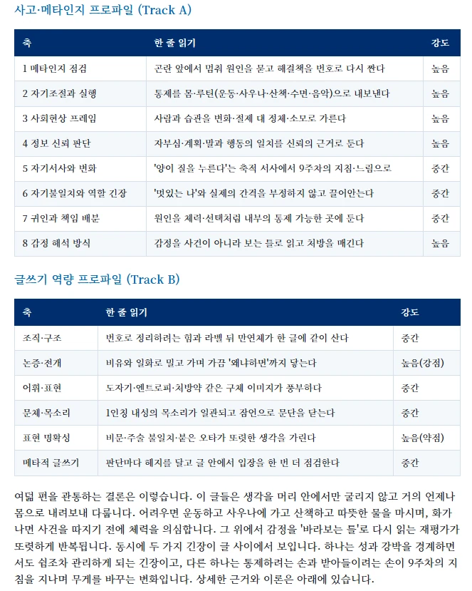
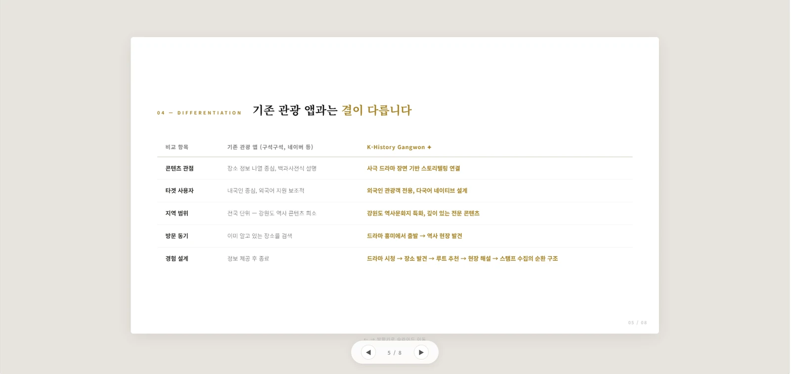
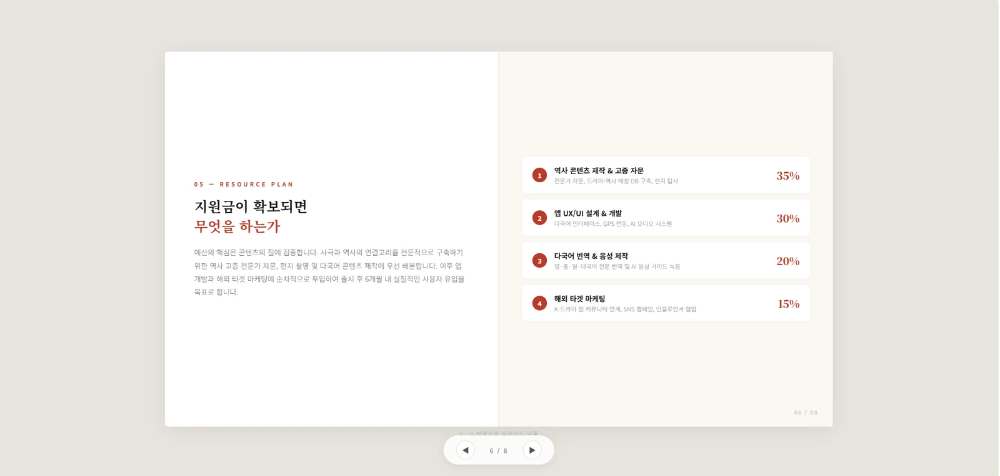

금지형
확인 불가능
- 확인 가능성
- —
- 학생 역량 성장
- —
- 윤리적 비용
- 낮음
- 교수자 통제
- 없음
Educational Harness Engineering
AI 시대, 학생들의 꼼수에 강한 수업·평가를 설계하는 법
“쓰느냐 마느냐”는 끝난 논쟁입니다. 남은 질문은 하나입니다 — 그래서 평가를 어떻게 설계할 것인가.
95%2026년 학업 AI 활용 학부생 비율
HEPI Student Gen-AI Survey 2026 (Report 199, n=1,054) · 2024년 66% → 92% → 95%
91.7%과제·프로젝트 자료검색에 AI 활용
한국직업능력연구원 2024 (n=726) · 60.2%는 “AI 의존 후 사고력 저하가 두렵다”고 응답
2,200만건이 20% 이상 AI 작성으로 표시
Turnitin 실측 — 2억 건 이상 검사 중 · 600만 건 이상은 80% 이상 AI 작성
막대는 왼쪽부터 — HEPI 학업 활용률 3개년(66·92·95) · 2026년 활용 유형 5종(텍스트 생성 56 · 요약 38 · 문장 교정 37 · 번역 31 · 이미지 22) · KRIVET 2024(자료검색 91.7 · 사고력 저하 우려 60.2). 단위 %. 장식 없이 실측값만 씁니다.
연세대 · 비대면 중간고사 (2025-10)
387명 중 211명
익명 설문에서 절반 이상이 “커닝했다”고 스스로 인정했습니다. 안 베끼면 손해를 보는 구조에서 다수가 내린 선택입니다.
아시아경제 보도
고려대 · 교양 중간고사 (2025-10)
1,400명 / 500명
수강생 1,400명 강의에서 약 500명이 카카오톡 오픈채팅방으로 문제와 정답을 공유해 중간고사가 전면 무효화됐습니다.
시사저널 보도
그 길은 이미 막혀 있습니다. 그것도 탐지 기술을 가장 잘 만들 수 있는 곳이 스스로 증명했습니다.
OpenAI 는 AI Text Classifier 를 2023-07-20 “낮은 정확도”를 이유로 중단했습니다. 공개된 성능은 정탐 26% · 사람 글 오탐 9%였습니다.
OpenAI 공지 · TechCrunch 교차 확인
비원어민 TOEFL 에세이 오탐률 61.3%, 입학 에세이 70.0%, 논문 초록 43.9%. 반대로 “원어민처럼 풍부한 단어를 써줘” 프롬프트 한 줄이면 탐지율이 11.3%까지 떨어집니다.
Liang et al. (2023), Patterns 4(7):100779 — 탐지가 perplexity 에 의존하기 때문입니다
Turnitin 오탐 32% · Originality 37%. 이공계 학술 글에서는 각각 49% · 42%로 뛰며, 인문학 글(86% · 96%)과 정확도가 크게 벌어집니다 — 짧고 수치·사실 위주인 글일수록 탐지기가 부적합합니다.
Hadra, Cambridge & Mesbah (2026)
밴더빌트대는 수개월 테스트 후 Turnitin AI 탐지를 껐습니다. 1% 오탐률이라도 연 75,000편 기준 약 750편의 학생 글이 잘못 표시됩니다.
Vanderbilt University (2023) — “AI 탐지가 효과적 도구라고 믿지 않는다”
확인 불가능
기술적 파산
최악
남는 답
금지는 확인이 안 되고, 탐지는 위에서 본 대로 파산했으며, 방임은 교수자가 아무것도 통제하지 못합니다. 소거하고 나면 하나가 남습니다.
Prompt
> 팩트체크 해줘
AI 는 “팩트체크”가 무엇인지 모릅니다.
Context
> 한국기자협회(journalist.or.kr) ‘이달의 기자상’ 수상작 페이지에 있는 기사 본문만 대상으로 이 텍스트를 대조해줘
말을 다 풀어서 설명해야 비로소 제대로 작동합니다. 이것이 컨텍스트 엔지니어링입니다.
Harness
> …그리고 그 사이트 이외에는 네 멋대로 참조하지 마
잘 생각해보면, 무언가를 더 구체적으로 명시한다는 것은 사실 “하지 마”라는 제약을 더 세게 거는 일과 같습니다. 이것이 하네스 엔지니어링입니다.
위 창은 프롬프트 인용이며 실시간 콘솔이 아닙니다.
“Good engineering involves thinking about how things can be made to work; the security mindset involves thinking about how things can be made to fail. It involves thinking like an attacker, an adversary or a criminal.”
좋은 공학은 무엇이 작동하게 만들지를 생각합니다. 보안 마인드셋은 무엇이 실패하게 만들 수 있을지를 생각합니다.
Dawson 은 BYOD 전자시험을 직접 해킹해 5개 공격 중 4개가 실제로 작동함을 보였습니다. 평가 설계자가 곧 침투 테스터가 된 연구입니다.
마인드를 바꾸셔야 합니다.
학생들이 꼼수를 쓴다면,
교수님 본인께서 학생들이 “꼼수를 쓸 것까지 감안해서”
틀어막는 평가 설계에 실패한 것입니다.
학생들은 “반드시” 생각을 안 하려는 꼼수를 씁니다.
아예 모든 시험과 과제 평가를 거기에서부터 출발해야 합니다.
소크라테스식 캐묻기. 학생이 AI 답을 눈으로 읽으려 하면 말을 끊고 되묻습니다. “수식은 됐고, 그래서 이 논문에 따르면 LLM 은 어떻게 작동하나요?” — “잘 모르겠습니다”가 나올 때까지. 그때 알려줍니다. 이해할 때까지 AI 에게 끝까지 되물으라고.
AI 가 대신 써주면 의미가 없는 주제. 매주 수업시간에 30분–1시간씩 8회. 주제는 자기 인식·말과 행동의 틈·판단 기준·관계·규칙과 순응·공정성으로 옮겨 갑니다. “너 자신에 대한 글쓰기를 AI 한테 시키면 그걸 도대체 어디다 써먹을 건데?”

글 묶음을 데이터로 만들어 돌려주기. 21일 매일 글쓰기 뒤 개인별 메타인지 리포트 1회(6/12). 사고 8축 + 글쓰기 6축, 모든 피드백은 학생이 쓴 본문을 근거로만 — 아첨도 가스라이팅도 금지, 이론 출처 포함.
성과: 기말 대면 자필 제출물 기준 90% 이상의 학생이 자기 문장 습관과 사고의 취약점을 스스로 설명해 냈고, 학기 소감 발표에서 모든 학생이 화면을 보지 않고 교수자와 눈을 맞춘 채 말했습니다. (안창현의 2026-1 수업 실적입니다.)
“항상 끝맺음이 글을 읽는 독자에게 책임을 전가한다”… 리포트를 받은 이후 크게 달라진 점은 내 주장에 대한 내 생각을 명확히 전달하고 타인 입장도 생각하며 ‘이해’를 해보려고 하기 시작했다는 것이다. 나조차도 리포트를 읽고 간파당한 느낌에 ‘핑계’가 아닌 방식을 택한 것이다.
습관적으로 ‘굉장히’를 쓰고 문장 끝마다 ‘~인 것 같다’를 붙여 생각을 흐리는 버릇이 있었다. 알아차리고 곧바로 지웠다. 원래 같으면 ‘잘못된 것 같다’라고 썼겠지만 지금은 ‘잘못됐다’라고 쓴다. 지금 보면 습관을 고친 글이 더 자연스러운데 과거에는 왜 저렇게 썼을까 하는 생각이 든다.
이전 글들은 멋있게 적으려 한 것들이 보였다. “이건 나 같지는 않다”는 에세이들도 있었다. 그 이후부터는 생각나는 대로 두서없이 적기도 했다. 그 과정에서 이런 글을 적는 나도 내 모습 중 하나임을 받아들이게 되어… 내가 나를 잘 알면 그걸로 충분하다는 게 뭔지 조금은 알 것 같다.
AI 리포트는 내가 ‘정보를 무조건적으로 수용하는 태도’를 지녔다고 분석했다. 리포트를 받은 뒤 ‘지나친’ 긍정의 태도는 역설적으로 나태함과 안일함을 가져온다는 것을 깨닫고 나의 문제 상황과 사회 문제를 더욱 날카롭게 바라보며 기록하려 했다.
2026-1학기 AI활용조사방법론 기말(대면 자필) 답안 발췌 · 저자 승인, 익명 처리


AI 사용을 전면 허용하고, 대신 제한 시간 안에 실제 심사위원을 상정한 창업·투자 제안 HTML PPT 를 만들게 했습니다.
작업 로그 미제출 시 50% 즉시 감점. 제출물은 슬라이드 8장 + AI 채팅창 작업과정 전체 로그입니다.
평균 채점 5분 미만. “앱”이라는데 앱 시안이 없으면, 기획이 레드오션이거나 근거가 없으면, “내가 왜 굳이 너희한테 돈을 줘야 하는데?”에 답이 없으면 — 자동적으로 낮은 점수입니다.
오른쪽 아래 슬라이드가 정확히 그 지적을 받았습니다 — “바이브 코딩으로 자본금 0원에 매출을 올리는 시대에, 왜 지원금을 받으면 그때부터 개발하겠다는 사람에게 예산을 줘야 하는가?”
| 나쁜 주제 | 좋은 주제 |
|---|---|
| AI 기반 쇼핑몰 창업너무 넓고, 본인이 아는 내용인지 알기 어려움 | 교내 외국인 유학생을 위한 지역 생활 정보 HTML 뉴스레터실제 사용자와 정보 문제가 비교적 분명함 |
| 대학생 대상 앱 만들기누구의 어떤 문제인지 불분명함 | 운동 초보자를 위한 학교 주변 헬스장·운동 루틴 비교 서비스본인 경험, 자료조사, 비교표, 시장성 설명이 가능함 |
규제기관·대학·기업·학술지가 같은 방향의 문서를 내고 있습니다. 이들이 저를 지지한 것이 아니라, 각자 같은 결론에 도착한 것입니다.
Nature(2025-05-14, 전 세계 연구자 약 5,000명) 설문에서는 AI 사용 시 ‘프롬프트까지 공개’해야 한다는 응답이 시나리오에 따라 20–42% 로 나타났습니다. 학계가 ‘사용 여부’를 넘어 과정의 재현 가능성을 요구하기 시작했다는 신호입니다.
이 과제는 어떻게 우회될 수 있는가?
위협 모델링 — Schneier · Dawson
우회하더라도 반드시 남아야 할 사고의 증거는 무엇인가?
authentic · 과정 평가 — Villarroel · QAA
이 중 AI 에게 맡길 반복 작업은 무엇인가?
개인화 · 정리 · 초안
교수자가 반드시 직접 판단해야 하는 지점은 어디인가?
분석 틀 · 최종 판단
마지막에 학생이 자기 말로 회수하는 장치가 있는가?
Lane 1 — 대면 · 구술 · 자필 (Univ. of Sydney)
실패하면 학생 탓이 아니라 설계 실패입니다. 새로 발견한 꼼수는 그때그때 교수자 노트에 기록하고 다음 학기 설계에 반영하십시오 — 그것이 하네스 업데이트입니다.
⚠️ 표시 항목은 서지·존재는 확인했으나 원문 직접 대조가 미완인 것들입니다. 이 페이지의 본문은 이들을 단언에 사용하지 않았습니다.